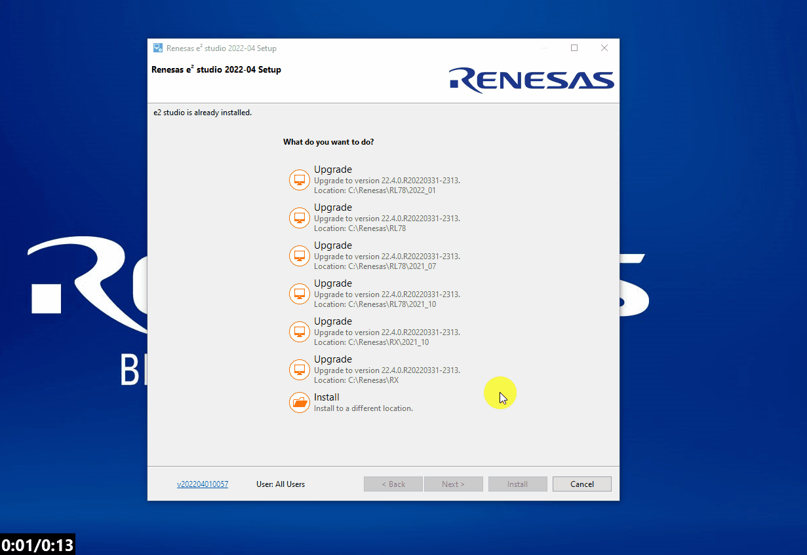
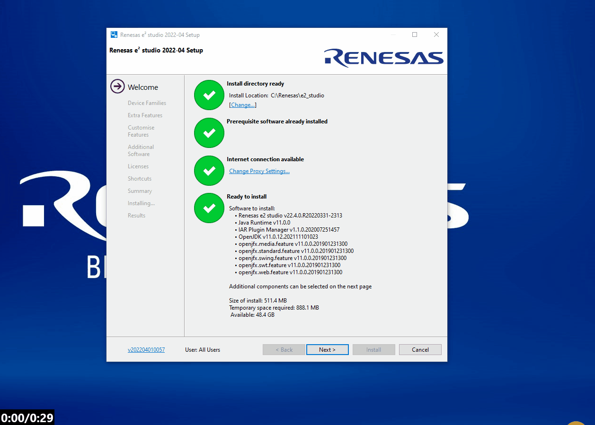
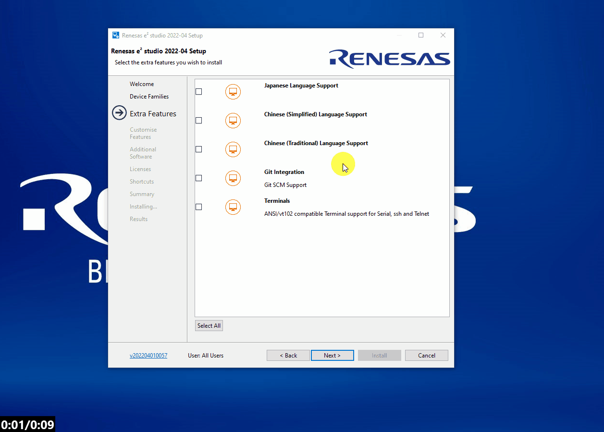
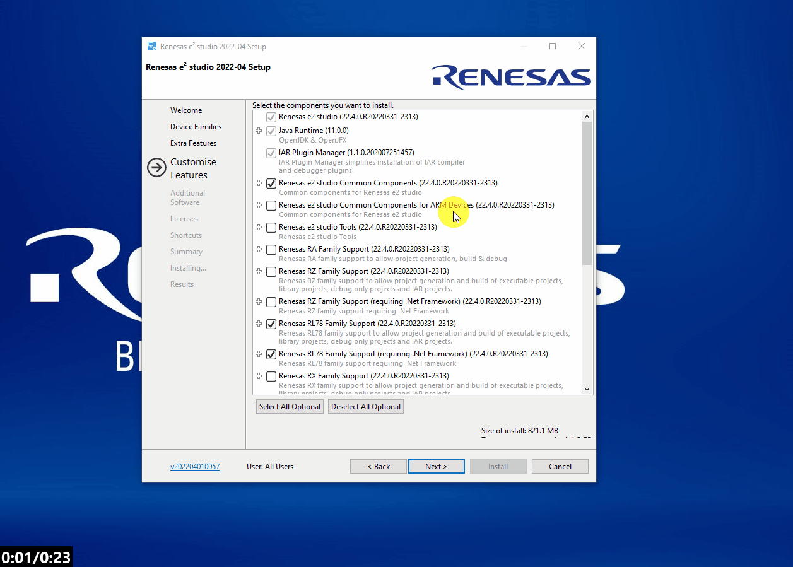

Here we will guide you through downloading and installing e2studio for anyone wishing to develop with any Renesas RL78 MCU.
1.1 - Download
Go to the e2studio landing
page and
download the latest release.
To do this, navigate to the Downloads section and select the latest windows installer for
e2studio.
You will be prompted to login to your My Renesas account - please do so.
1.2 - Start the installer
Once downloaded, unzip and launch the installer (this usually works best with admin rights when using a workplace computer). The installer may take a minute to extract the contents, so please be patient!
1.3 - Installation type
If you have multiple installations you will be presented with the option to install or upgrade. Here I will install to a new location - this is personal preference in seperating toolchain variants.
1.4 - Edit install location
The use of a non-default install location can greatly help with organising toolchain installations. To change the default click [Change...] and browse to the desired location.
1.5 - Acquire RL78 components
First click [Next >] and select the RL78 family of components.
1.6 - Customisations
We will go through a somewhat extended custom installation to ensure moving forward
you are prepared to start developing with all Renesas tools.
First select the Git Integration in Extra Features.

Now proceed to Additional Software and include support for QE for
capactive touch and the GCC toolchain.

1.7 - Finish install
Finally accept the license agreement (after careful review...) and accept the default selections for the rest of the installation and proceed to install.